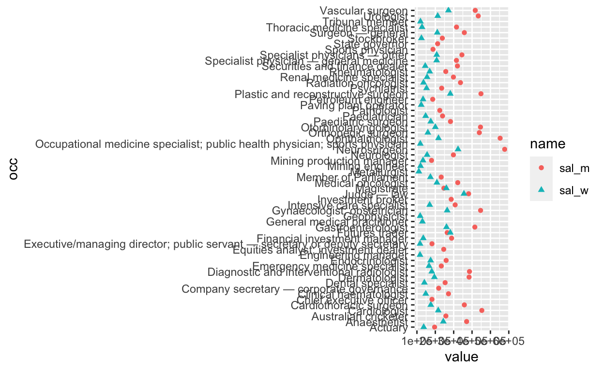
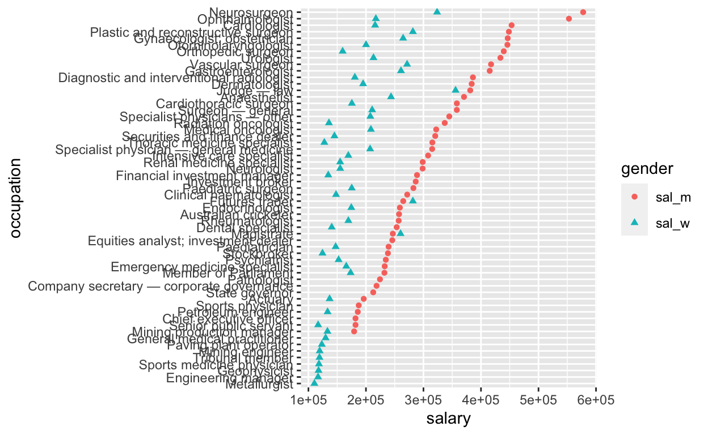
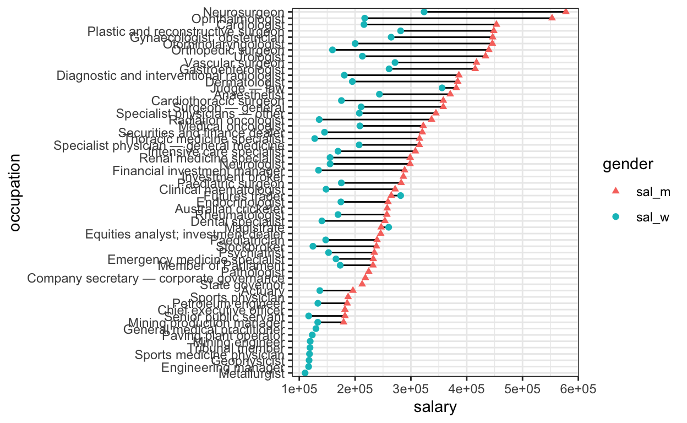

Long tables are an inefficient way of reporting salary differences. Here I transform a census table into an reactive plot to convey the stark salary gap between professional men and women.
My eyes tend to glaze over whenever a long table appears in general or scientific reporting. Here I attempt to convert a report on gender-based salary disparity into something more easily interpretable. The problem will only hit home with the audience if the differences are displayed graphically.
The article (generously defined) in question is here.
The aim is to create an interactive graphic displaying the salary and gender pay gap for all listed professions.
First let’s load some required packages
I’ve copied the men and women tables into text files. Read these using read_tsv(), then use rename() to set the column names to occ (occupation) and sal (salary)
Combine the two tables side-by-side using full_join(), and append ’_m’ and ’_w’ as the suffix to distinguish columns with the same name.
Try out the plot
sal_tbl %>%
pivot_longer(-occ) %>%
ggplot(aes(x=value, y=occ)) +
geom_point(aes(col=name, shape=name))Warning: Removed 16 rows containing missing values (geom_point).
There’s a warning that 16 data-points are missing. Check this by counting the NA values in the men and women salary columns
# A tibble: 3 × 3
`is.na(sal_m)` `is.na(sal_w)` n
<lgl> <lgl> <int>
1 FALSE FALSE 42
2 FALSE TRUE 8
3 TRUE FALSE 8So 8 data points are missing from each of the men’s and women’ list. This indicates that the top 50 highest paid professions are not completely equivalent between the genders. The incomplete data will be more obvious when the y axis is sorted (below).
The y axis labels are blowing the dimensions out, so let’s paraphrase them using case_when() and str_detect(). Then we calculate the wage gap using mutate()
sal_tbl_edit <- sal_tbl %>%
mutate(occupation = case_when(
str_detect(occ, 'Executive/managing director') ~ 'Senior public servant',
str_detect(occ, 'Occupational medicine specialist') ~ 'Sports medicine physician',
TRUE ~ occ)) %>%
mutate(wage_gap = abs(sal_m - sal_w)) %>%
select(occupation, everything(), -occ) Now to fix the order of the y axis (largest to smallest on men’s salary); this is tricky but helped by this solution. When the y axis is discrete, the axis order will be built from the bottom up. In the second step, we transform the shape of the data from wide to long, using pivot_longer().
sal_tbl_edit %>% arrange(!is.na(sal_m), sal_m, sal_w) %>%
mutate(occupation = factor(occupation, levels = occupation)) %>%
pivot_longer(cols = -c(occupation, wage_gap), names_to='gender', values_to='salary') %>%
ggplot(aes(x=salary, y=occupation)) + geom_point(aes(col=gender,shape=gender))
Now we add a line between data for the same profession using
geom_line(). This geom is given before geom_point() so that the points
overlie the line ends. We also use scale_shape_manual() to change the
shape to assign women as circle and men as triangle, which is slightly
more intuitive given ♂ and ♀
conventions. To check the encoding of different shapes, run
?pch
sal_tbl_edit %>% arrange(!is.na(sal_m), sal_m, sal_w) %>%
mutate(occupation = factor(occupation, levels = occupation)) %>%
pivot_longer(cols = -c(occupation,wage_gap), names_to='gender', values_to='salary') %>%
ggplot(aes(x=salary, y=occupation)) + geom_line(aes(group=occupation)) +
geom_point(aes(col=gender, shape=gender),size=1.5) +
scale_shape_manual(values = c(17,19)) + theme_bw()
Its good practice to separate the data (top lines) from the plotting function (bottom lines), and store the data as a new variable. In this step we also divide the salary by 100000 and store as a new column (‘sal_slim’), to clean up the x axis numbers. When users scroll over the datapoints however, we want the original number displayed.
Finally we can call the plot within plotly() add two features: a text aesthetic and a tooltip, to make it interactive. We also add an x axis label, and delete the y axis label as the axis labels obviously relate to profession.
plot_final <- sal_tbl_final %>%
ggplot(aes(x=sal_slim, y=occupation)) +
geom_line(aes(group=occupation)) +
geom_point(aes( col=gender, shape = gender ,
text = paste0(occupation, ' $', salary, '\n',
'Wage gap:', '$', wage_gap) ), size=1.5) +
scale_shape_manual(values = c(17,19)) +
xlab('Salary ($100,000s)') + ylab('') +
ggtitle('Gender pay gap for most highly-paid professions',
subtitle='Australian census data') +
theme_bw()
ggplotly(plot_final , tooltip = 'text', width = 1000, height=800)
It looks like the wage gap is generally larger when
salaries are higher. How does the relative wage gap change with greater
absolute men’s salary? To get an idea of the relationship between
absolute salary and gender pay gap, we can plot the men/women salary
ratio, and size the points by the absolute men’s salary.
rel_gap_tbl <- sal_tbl_final %>%
select(1,gender,salary,wage_gap) %>%
pivot_wider(names_from = 'gender',values_from='salary') %>%
mutate(ratio = sal_m/sal_w) %>%
mutate(gender_col = ifelse(ratio>1,'Men','Women'))
rel_gap_plot <- rel_gap_tbl %>% na.omit() %>%
ggplot(aes(y=occupation)) +
geom_point(aes(x=ratio,col=gender_col, size=wage_gap,
text=paste0(occupation,'\n',
'Wage gap: ', '$', wage_gap))) +
geom_vline(xintercept = 1, lty=2) +
scale_shape_manual(values = c(17,19)) +
xlab("Men's pay ÷ women's pay" ) + ylab('') +
ggtitle('Relative gender pay gap for highly-paid professions',
subtitle='Australian census data') +
theme_bw()
ggplotly(rel_gap_plot , tooltip = 'text', width = 1000, height=800)The differences are stark when the data are presented graphically. In
terms of improvements to the charts, for the first chart the data is
incomplete, as only the top 50 salaried professions were included for
each gender. The salary for metallurgist men may be greater than for
women, but this profession ranked in the top 50 only for women, and as
such the data for men is missing.
In addition, the salaries for women sports physicians is likely
less than $100,000. To better display this a line from 1 to 1.875 could
be added, indicating the presence of a datapoint < 100000. Even
better would be curating a complete list of data from the original
census link! Lastly, the legend labels are cryptic and could be updated
to ‘Men’ and ‘Women’.
Plotly doesn’t parse all of the ggplot commands (for example
ggtitle(subtitle) ) and produces some interesting legend notation.
Endless refinement is possible, but at least now the take-home
messages are clear:
Even in high-paid professions, higher salaries are associated
with higher gender pay disparity, and the medical profession is
particularly fraught.